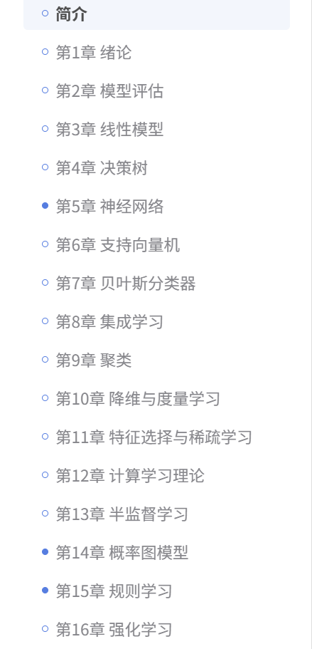

一些想学但是还没学的好东西，不要让收藏夹⭐吃灰了！给我学！赚钱！
目录
理论基础
-
DW 机器学习-南瓜书🎃 ————配套的B站教程：西瓜书🍉的简易版
-
① 强化学习教程 - 磨菇书🍄 ② easy-rl在线阅读：还有苹果书🍎
B站up主
细分领域
模型下载
国内：
- 魔搭社区ModelScope模型库：牛逼
- 阿里EasyNLP：这个更NLP，有BERT什么的
- 百度飞浆PeddlePeddle的模型库：没有魔搭好
- 文心ERNIEKIT专用：只有ERNIE系列模型，要用才用这个
国外：
- Huggingface：权威啊
云环境
RAG
大模型竞技场
- LMArena———大家可以在上面使用对比不同模型
项目
岗位分类应用算法型、研究型
Agent/RAG > 微调 >
科研
视频
what is 科研？
新知识
工程（复现代码）、刷榜（只是方法的复现，用别人的方法测不同的参数。我发现这个方法在其他数据集效果更好）、研究（就是为了同行交流，不可学术不端！！永远不可为了有成功而低头，要真的有用）
论文不要都精读，带着问题解决我的问题就行
论文的构成
- title-标题
- abstract-摘要：告诉你做了啥，结果是啥
- introduction-介绍：任务的背景介绍
- related works- 相关工作：引用同行的工作，要调研清楚同行的
- method- 方法：用的什么方法解决问题
- experiments-实验：跑实验，文章是怎么说明问题的
- conclusion-结论：文章的结论
- limitations/discussion-局限和讨论：局限、未来可能的方向，展望
筛选论文
先花1-3min决定要不要下载/关闭？
- 标题：是否方向相关？
- 摘要：什么问题、方法、结论
- 图标：图的标题和内容，好图胜过千言万语
- 结论：看第一段+最后一段，确认贡献和局限性
不看introduction、method、results、实验细节、参考文献
how to 读 paper？
化为己用！学创新点 不要线性从头到尾读 榨
捞捞


文章摘要预览